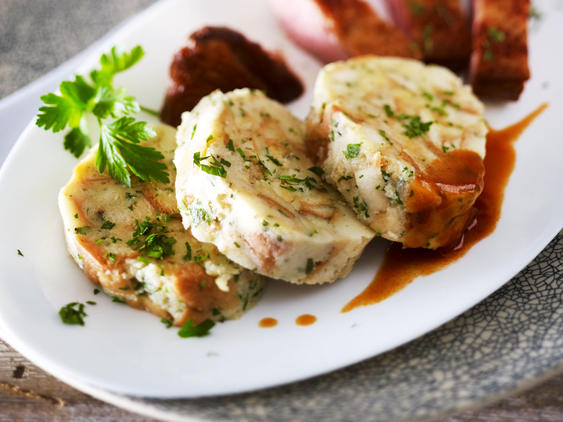

Bavarian Dumplings

Description
very unhealthy but very good!
Ingridients (for four persons)
try the vegan version
- 6 breadrolls from yesterday
- 300 ml milk
- 1 onion
- 20 gr butter
- 3 eggs
- 50 gr bacon
- a handful of parsely
- salt, pepper, nutmeg
Steps
- Preparation:
- chop onion, bacon and breadrolls
- search for cling film a teatowel and twin
- boil water, salt it (should be salty like the ocean)
- put the lukewarm milk to the chopped breadrolls and wait 30 min
- roast onion and bacon
- put all ingridients together, knead it by hand
- roll it in the cling film (should look like a big sausage)
- wrap it in the teatowel and tie it up
- cook with little heat for about 30 - 40 min
- chop it in slices and fry them
back to the Odin Recipes Start Page